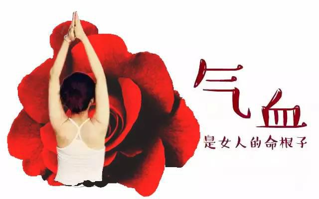
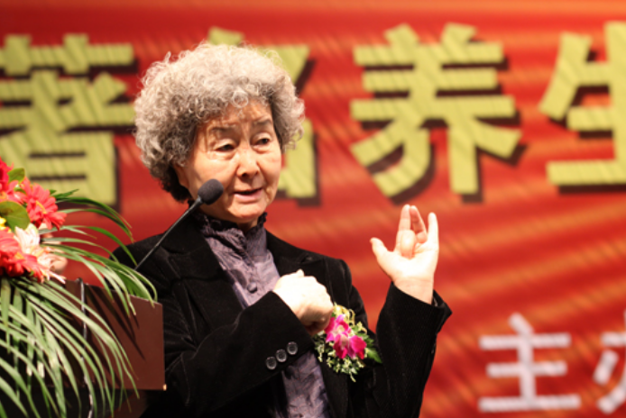

阅读 100000+
6048
························精选留言························
美神MISS
第1楼 2018-10-04
抱着试一试的心态，服用了2周，效果还是很显著的。吴老师就是靠谱！
昨天
作者回复没错，上过央视的老专家，靠谱！赶快加微信吧！他们有问必答，还给方子，态度特好！
初夏微凉
第2楼 2018-10-06
看到一半，就默默的已经添加了
昨天
笑看人生花开花落
第3楼 2018-10-07
遇到贵人了，吴老师是高手，救救我啊！
昨天
| 作者回复
添加吴老师他们的微信，相信对你会有很大帮助的。吴老师会耐心给你解决的。
檬檬
第4楼 2018-10-07
感谢楼主分享，月经量少这事困扰好多年了，先去了解一下~~
昨天
奶茶妹子
第5楼 2018-10-08
如果管用，我给楼主发个大红包！
昨天
| 作者回复
我想问，你打算发多大的？小的就别发了，哈哈，其实我红包已经接到手软了！
路人甲
第6楼 2018-10-08
祖国中医博大精深，绝对有价值的好文章，收藏了~
昨天
我是美羊羊
第7楼 2018-10-09
是不是这么管用啊，去年查出盆腔炎，好害怕！！
昨天
| 作者回复
快添加微信，问问吴老师吧，有病千万别耽误！

第8楼 2018-10-09
果断加了。去找吴教授，就是不一样，给我耐心解答和平时需要注意的地方。还给我开了中医方子，服用了两周吧！效果真的挺好，脸上的斑都没了，月经也正常了，好东西，大家分享呀。
昨天
| 作者回复
嗯，对，好东西别藏着掖着。
北方汉子
第9楼 2018-10-10
23
为了帮媳妇问问，昨天已经添加了，嘿，服务态度超好，还给乐两个方子！
昨天| 作者回复
吴老师妙手仁心，您是好女人。
昨天
第10楼 2018-10-10
这么神奇，我也要试试
昨天
ufu
第11楼 2018-10-11
先加微信了，得病半年了，好想快点好起来。
必看：月经量少，卵巢早衰，停经更年期提前的根本原因?中医教授这样说！
月经量少推迟，有淤血块，颜色发黑，痛经。
几个月来一次月经，量特别少，闭经、停经两年之久。
妇科炎症，卵巢囊肿、子宫肌瘤、腺肌症，但是不想手术。
失眠多梦，脸色暗黄有色斑，皮肤松弛气色差。
总感觉腰膝酸软，怕冷，手脚凉，乏力。
容易盗汗，烦躁易怒、心慌头晕、脱发白发。
胸部及下腹胀痛，皮肤松弛，陰道干涩，性欲减退。
生了二胎后，皮肤暗黄长斑，皮肤粗糙。
如果你有出现以上任一问题，那么，恭喜你来对地方了。接下来海派中医吴老师调理团队要告诉你一个调月经，补气血，延早衰的好方法，让你魅力再现，延缓更年期，回到皮肤紧致水嫩的状态，做完美女人！
吴老师认为，气血不调，气滞血瘀是内因，调补女人一身气血，上养颜，中润巢，下调经，从根源上调理98%的女人问题，不论您是60、70、80、90后，读完这篇文章，必能使你受益终生......
月经量少，气血不足怎么办？
吴老师精通药性，熟悉药理，仍然每天坚持坐诊，对于中药的君、臣、佐、使配伍，强调合理、科学、严谨，是业内少有的医药双通的名师。

吴老师调理团队诊断一不需要复杂的化验，二不需要昂贵的仪器检查，望闻问切，看脸色，听声息，问症状，能不能 把病情说准，水平就摆在那里；像痛经、少经、闭经、失眠、便秘、肤色晦暗、手脚冰凉、宫寒、心烦、潮热、盗汗等女性问题，三五天可改善， 对于一些常见的查不出原因的卵巢囊肿、子宫长包、不孕……也能改善！

吴教授从医50余年，对中医古方应用和妇科中医食疗有深入研究，紧密结合临床，编写了二十余部妇科中医著作。现为北京电视台《养生堂》中医养生专家，中央电视台《健康早班车》专家顾问团成员。
吴老师团队认为：女人是水做的，这“水”从某方面来讲又可以说是气血。气色好的女人，不仅皮肤红润、美丽动人，还有充沛的精力。 对于女性朋友的问题，要根据个体情况调理，赢得众多病友的赞誉。
现如今，吴老师团队紧跟时代步伐，学会了玩微信，并突发奇想在微信上教粉丝用“调理气血”的方法，意想不到的是，吴老师调理团队这个方法受到数以万计的粉 丝追捧，目前已有100000女性朋友直接受益！
女人该醒醒了，听吴老师说
“女人二八如日过午，身体开始走下坡路，大部分女性的解决方法都不科学，脸上长斑用各种各样的祛斑产品；皱纹增多了，美容除皱；乳房松弛，只知道丰胸；胖了就吃减肥的；殊不知，要想让 青春常驻，辨证体质、内调外养才是根本之道！

作为女人一定要学会自我判断，吴老师领衔的中医调理团队开通微信就是希望能帮女性朋友找到正确的调理方向，避免大家走弯路、花冤枉钱！早学习、早调理，身体不遭罪，人也变年轻。
吴老师对女性的告诫
“40岁不到就停经，你这是卵巢早衰，黄体酮要停，吃了月经就来，不吃月经就不来，时间长了会加速卵巢的萎缩，比同龄人老十几岁，解决不了根本问题。”
“子宫长包这种情况，不严重的时候医生就会说没事，严重就叫你做手术，能抑制的时候不抑制，非要等严重了才知道后悔！”
你备孕不上，需要辨证分析。别担心，找到源头来调理，要怀孕先调理好月经，月经恢复正常了，保证你很快就会有喜的！”
“眼圈发黑，子宫里有淤血；血淤为斑，祛斑必先化淤。淤血不能化开，脸脱三层皮，斑也祛不掉。”
“30岁气不足发胖，血不足偏瘦，气血不足容易老，气血亏虚自测其实很简单，月经量多还是少？脱发严不严重？晚上睡眠质量怎么样？”
女人最害怕什么呢? 衰老快！！

气血越不调,老得就越快。如果长期月经量少，出现深色血块、闭经，烦躁易怒，乳房肿块，患卵巢囊肿、子宫长包、宫颈癌的几率增大20倍!所以女人千万别等绝经了才后悔!唯有 气血双补，祛湿排毒，才能改善女人一身病!有些症状常规方法无能为力，但吴老师团队的调理方案却很适用！
特别提示：
咨询人多，添加微信后，留言说明年龄，症状，想法。吴老师团队会按咨询顺序回复！
做由内到外美丽的健康女人，添加官方微信： 长按复制微信号
长按识别下方二维码
关爱女性健康，为了让更多的女性朋友体验““妇科专用药”真实效果。即日起对每天前200名咨询订购享受特大优惠惊喜！立刻添加下方官方微信享198元健康大礼包！
吴老师说，女人60不绝经
吴老师领衔的调理团队自开通微信咨询、约诊以来,每天都有全国各地的朋友来报喜，吴老师及专家调理团队也 深感欣慰:有带着自己女儿远道而来的,甚至一些知名演艺界人士开着上百万跑车也慕名而来。很多女性被吴老师团队由衷的折服：用吴老师团队的方案,可调经止痛。
一个快要绝经的55岁妇女，通过喝吴老师团队的调理方案，不仅容光焕发，看起来只有30多岁，而且现在还没有绝经迹象,女人味十足，比做了几十万的卵巢保养,SPA都有效。让她不得不感叹说 ：“还是吴老师团队说的好啊， 药不对症用船装，对症一副方，女人60不闭经”！
患者真实调理事例，来一个好一个
刚开始，很多人都是抱着试一试的心态，毕竟健康无价。
最终吴老师团队用事实征服了她们.......
经量少斑点痘痘 3个周期改善了

李女士，今年29岁。长时间的月经量少，不仅量少发黑还有血块，总是延后。并伴有手脚冰凉，脸上暗黄长斑、长痘等问题，给她在生活中带来不少烦恼，出门都需要很大的勇气，去了很多医院看了也没多大效果。
在一个偶然的机会，她在微信公众号上看到了吴老师调理团队的一篇养生的文章，觉得很有道理，抱着试一试的心态，就找到吴老师团队，了解情 况之后，吴老师团队就把她的问 题说的八九不离十，让她大呼神奇！调理一个周期后，她发现手脚冰凉的情况改善了，长痘的症状也减轻了，效果还是很明显的，于是又调理了2个周期。
调养三个周期后，脸上斑和痘痘基本消除了，月经也水到渠成的每月都来报道 手脚冰凉也得到很大改善，非常开心，特意告知要用她自己案例来做宣传！想让更多女性姐妹身体健康!!!
吴老师调理团队讲，其实在人体生成时就已经赋予了女人经期排毒的能力，但是由于气血不足、气滞血瘀，就把这个扫毒通道堵住了，按照吴老师团队的方法调理，你会发现经期能排出很多暗紫色、有腥臭味的血块，每排出一次，脸上的斑少一些。什么时候经血中没有血块了,体内瘀血也就排干净了,年轻、健康、亮丽，全回来了！
40岁全职太太，成功拽回月经，年轻了好几岁
女性月经量少，月经退后或提前，月经量少，时常困扰无数女性，比较常见。找过吴老师的女性，不靠别的，靠调理就能还女性满满的自信

南京40岁的蔡女士，全职太太。年轻时生活条件不是很好，不懂得保养，那时候生养2个小孩落下不少毛病，现在小孩都长大了，人也懒了不少，生活作息不是很正常，所以经常熬夜、打麻将等。导致现在月经紊乱、黄褐斑、色斑很多很明显，皱纹也加深了，而且 情绪变得急躁，全身都有热流，还有潮红盗汗等症状，睡不好也吃不香。
无意间听说邻居用这个产品效果很好，于是买了试试，用了一段时间，之前那些更年期的症状明显减轻了，月经恢复了，不心慌焦虑了，潮红潮热盗汗等等这些症状都没有了，睡觉安稳很多，肤色变红润了。
吴老师说：“很多人身体出现不适症状了开始将就着，实在不行了去看医生开些西药，再严重了就去做手术，最后到了不治之症了，舍得花钱了，却无药可救了，开始早干嘛去了？”“还有的人就是想补，什么补品贵吃什么，也不知道自己哪里出了问题，阴虚还是阳虚？气虚还是血虚？买来一堆补品乱补一气，结果劳财害命。"
在这里我告诫大家，补品以稀缺而贵，不一定调补百病，女人的问题一般比较多，头痛医头，脚痛医脚，肯定调不好，通经络气血、疏通微循环，气血通达，就能解决大问题。”
8年不孕 半年调理添男宝
吴老师团队遇到一位女白领，在广州宝洁物流部工作，36岁了，打扮得很漂亮，低腰裤。工作忙，压力大，月经量少，时多时少，平时手脚发凉，经期时还痛经，有时候痛得不能上班。结婚8年，一直没怀孕。双方父母很着急,自己也经常怀疑自己是不是有问题。
吴老师说：《傅青主女科》里有一句话：“寒冰之地不生草木,重阴之渊不长鱼龙,胞胎既寒何能受孕?”吴老师调理团队专家对她语重心长的说， 你想生孩子，这些四面漏风的衣服就不能穿了！你穿低腰裤，风寒一起，伤的是“带脉”，风寒通过它直奔冲任、脾肾。
肾阳受损，自然没能力温暖子宫。再就是露背装，把统领阳气的督脉，赤裸裸地暴露在风中，伤了阳气就是伤了五脏六腑之正气，综合作用在子宫上，女人问题就全来了。你岂止是宫寒，整个子宫都像一个寒窖啊！
吴老师团队认为，手脚冰凉是气血亏虚，血不达四肢，命门火衰所致，很多手脚冰凉的女性，通常都伴有宫寒、痛经，经期小腹坠胀，月经颜色发黑，有血块，白带多，乳房也经常胀痛，平常总觉 得没劲，肚脐和腰无论夏天还是冬天都是冰凉冰凉的！长期手脚冰凉，宫寒，想怀孩子都难！只有气血充盈，子宫温暖，才能怀的上，生得下，女人身子要暖一点才好。
吴老师调理团队一副气血双补、活血化瘀方案，贯上彻下。一段时间后，她跟吴教授团队反应手脚热乎了，皮肤从惨白蜡黄无血色，渐渐红润起来，感觉阳气足，不怕冷,经痛减轻。调理半年后，月经正常，怀孕后生了一个男孩！
特别提示：
咨询人多，添加微信后，留言说明年龄，症状，想法。吴老师团队会按咨询顺序回复！
做由内到外美丽的健康女人，添加官方微信： 长按复制微信号
长按识别下方二维码
关爱女性健康，为了让更多的女性朋友体验““妇科专用药”真实效果。即日起对每天前200名咨询订购享受特大优惠惊喜！立刻添加下方官方微信享198元健康大礼包！
补气血一定得避开的误区
吴老师团队提到气血看两点，一是虚，二是淤。要根据自己的情况针对性调理，否则只会更加“添堵”，只有气血平衡，月经回潮，才能既美丽又健康，更有女人味，否则越补越差！ 千万别急于求成走到误区：
误区1> 吃西药
破坏人体细胞，长期服用还会对胃、脏器都有一定的损伤。时间久了极易产生依赖性，甚至还会得骨质疏松。
误区2> 仅吃生红枣补血
别以为吃个大枣就能补血。气血相依，往往血虚也会伴随气虚，单纯的补血并不能解决气血亏虚带来的问题，反而是延误最佳调理时间，小病拖成大病，大病拖成绝症，那时候再去诊所花再多的钱也无济于事了。
误区3> 补充雌激素
补充雌激素，虽然短期内看到了效果，却不能从根本上解决问题。体内的激素水平，依旧处于失衡状态，长此以往，还会因激素摄入过多造成肥胖的问题，并且会抑制自身的正常激素分泌，导致卵巢机能退化和卵巢早衰，甚至有引发卵巢囊肿、子宫肌瘤、乳腺增生等病症。
总的来说，很多女人一过30岁，面黄、色斑、皱纹、皮肤发干、黑眼圈等容颜问题，无论抹化妆品还是去美容院，都是无法解决的。要美容养颜，必须以内调外，外症内治。
按症调理，方能改善症状
快人快语，霹雳手段，菩萨心肠，吴老师团队的方案以精简擅长，特别狠，狠就狠在能够根据个人进行对症的调补，真正做到了 的辩证施治。
现在很多女性出现了妇科问题都是去医院，医生开出来的药无非是洗剂，黄体酮，雌激素，抗生素，抗菌素，抗炎素，病症暂时得到缓解，可是身体产生药物毒素，自身抵抗力也下降了。 调理起来反反复复，总是不能彻底调好，时间长了，身体产生抗药性和耐药性，体内药物毒素堆积。
对于冬天怕冷，手脚冰凉、宫寒，不管是先天的，还后天的，是产子、哺乳、人流伤了元气，小问题，吃上一个月，气血马上就旺了，晚上睡觉再 也感觉不到下肢冰凉。过了30岁，很多人开始脱 发，长斑，月经量越来越少，失眠，胸痛等等，这些小毛病调.理不到20天，很多人就像换了一个人。 不少人闭经都快2年了，调理2个月左右，硬是活生生的给拽回来了。
吴老师团队告诫说：方案的厉害在于根据个人进行对症的调补，做到了的辩证施治。女人的气血问题有气虚、血虚、肾虚、肝郁各种类型，比如，月经提前、量大说明气血了；月经量少 、推迟血虚了；可是很多女性误以为吃个阿胶就以为能补血，吃个黄芪就能补气，这些都不靠谱。 切不可千人一方，万人一药。不对症进行乱调补，还会惹出上火、心烦失眠、厌食 、便秘、月经量少等。
吴老师团队擅长调理4类妇科顽症
闭经，过早衰老
女人最怕老，提前衰老的罪魁祸首就是“闭经”。昂贵的化妆品、高级美容院都没用，只能是“竹篮打水一场空”。 症状：面色暗沉蜡黄、皮肤松弛、皱纹增多，色斑块变大、多梦烦躁、闭经等。
更年期提前、多梦烦躁、潮热汗出
症状：卵巢功能衰退，导致雌激素、孕激素的缺乏或波动，出现喜怒无常、脾气火爆、多梦烦躁、潮热汗出、郁郁寡欢、满腹牢骚……30-50岁女性如果出现这类情况，那可要警惕了，更年期正 悄悄向你逼近。
久不受.孕
病症：月经紊乱、卵巢早衰、内分泌紊乱及其它妇科疾病造成的久不受孕。
子宫长包、卵巢囊肿、乳房肿胀
病症：“症瘕痞块”长期淤积在乳房里，就会造成乳房胀痛、增生；“症瘕痞块”长期淤积在子宫卵巢里，就会造成子宫长包、卵巢囊肿，如果“囊肿”长期不调理，就是乳腺癌、子宫癌……
调养过的女性普遍反映：
一般1周左右：手脚暖和，不再整天冰凉冰凉的，晚上睡眠好，不再多梦易醒，气色、精神明显变好！
1个月左右：气血充盈，黑眼圈、色斑明显明淡；月經量变多，痛经减轻，白带异味、腰腹酸胀坠痛等婦科炎症问题明显转好！
2个月左右：面色暗黄消失，气色变好，黑眼圈、色斑消失，月經规律正常，痛经消失，轻中度婦科炎症消失，重度炎症减轻！
3个月以上：婦科瘙痒、异味、疼痛可消除，增生、肌瘤、囊肿萎缩变小，整个人皮肤白嫩、细腻、红润，精神饱满，容光焕发，由内而外焕发健康青春气息，魅力无穷！
吴老师团队的心里话
吴老师团队告诫广大女性，化妆品不要专挑贵的买，美容院不要专挑贵的去，女人的美不是化妆品化出来的，不是名牌服装穿出来的，更不是用整形手术做出来的，女人的美是由内而外散发出 来的。

吴老师团队善用调补气血、补肾养巢之法，调理女人病，像面黄长斑、更年期症状、月经女人病，不妨问问吴老师团队，就能彻底解决！
吴老师团队接诊人群：
1、人流、术后、产后、病后体弱
2、失眠、多梦、易醒、心神不宁、易怒
3、经期不准、经血少、淤血块、颜色发黑
4、经期胸部胀痛、下腹胀痛、坠痛、心烦
5、怕冷、手脚凉、腿凉、子宫虚寒
6、贫血、脸色苍白、腰酸腰痛、头晕目眩
7、面部色斑、脱发、皮肤松弛、气色差
8、陰道干涩，性欲减退、生理功能减退
9、提前绝经、临近闭经、闭经两年之久
10、爱美女士、注重保养，追求生活品质
特别提示：
咨询人多，添加微信后，留言说明年龄，症状，想法。吴老师团队会按咨询顺序回复！
做由内到外美丽的健康女人，添加官方微信： 长按复制微信号
长按识别下方二维码
关爱女性健康，为了让更多的女性朋友体验““妇科专用药”真实效果。即日起对每天前200名咨询订购享受特大优惠惊喜！立刻添加下方官方微信享198元健康大礼包！
版权：武汉云泰仑生物医药科技有限公司
 点击加微信教你调经养颜秘籍
点击加微信教你调经养颜秘籍